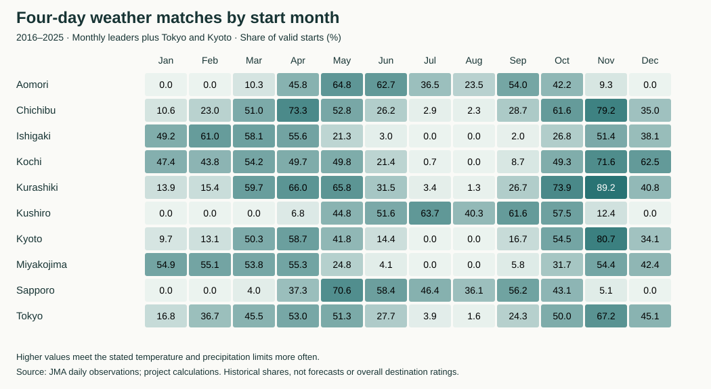

Japan by Month: Four-Day Weather Comparisons for 56 Destinations
Editorial draft, 19 October 2026. Weather rankings with lodging demand shown separately.
If you can choose both your destination and your month, start with three results from this comparison: Sapporo in May, Kushiro in July, and Kurashiki in November. Their shares of historical four-day periods meeting the weather conditions were 70.6%, 63.7%, and 89.2%.
August needs a different expectation. Kushiro ranked first that month at 40.3%. Even the leader fell below half. A monthly winner can still have many four-day periods that fail the conditions.
I compared 56 destinations using daily weather observations from 2016 through 2025. For each possible four-day stay, I checked the temperature and precipitation on all four days. The tables show how often a stay met the conditions, alongside the prefecture’s seasonal lodging demand.
The leading destination in each month
“Weather match” means the share of valid historical four-day periods meeting all the limits below. “Valid coverage” shows how many candidate periods had usable observations. The lodging ratio uses 2023–2025 data and compares the prefecture with its own annual average: 1.200 means 20% above that average.
| Month | Rank | Destination | Weather match | Matching / valid starts | Valid coverage | Lodging area | Lodging ratio |
|---|---|---|---|---|---|---|---|
| January | 1 | Miyakojima | 54.9% | 168 / 306 | 98.7% | Okinawa | 0.746 |
| February | 1 | Ishigaki | 61.0% | 166 / 272 | 96.1% | Okinawa | 0.969 |
| March | 1 | Kurashiki | 59.7% | 185 / 310 | 100.0% | Okayama | 1.066 |
| April | 1 | Chichibu | 73.3% | 220 / 300 | 100.0% | Saitama | 1.031 |
| May | 1 | Sapporo | 70.6% | 219 / 310 | 100.0% | Hokkaido | 0.898 |
| June | 1 | Aomori | 62.7% | 183 / 292 | 97.3% | Aomori | 1.067 |
| July | 1 | Kushiro | 63.7% | 191 / 300 | 96.8% | Hokkaido | 1.238 |
| August | 1 | Kushiro | 40.3% | 124 / 308 | 99.4% | Hokkaido | 1.313 |
| September | 1 | Kushiro | 61.6% | 180 / 292 | 97.3% | Hokkaido | 1.119 |
| October | 1 | Kurashiki | 73.9% | 226 / 306 | 98.7% | Okayama | 1.090 |
| November | 1 | Kurashiki | 89.2% | 264 / 296 | 98.7% | Okayama | 1.152 |
| December | 1 | Kochi | 62.5% | 192 / 307 | 100.0% | Kochi | 0.834 |
The weather and lodging columns answer different questions. A high weather share means more historical dates met the specified limits. A low lodging ratio means less overnight demand relative to that prefecture’s usual level. It does not tell you how crowded a particular street will be, how much a room will cost, or whether a hotel has vacancies.
The conditions behind the comparison
This analysis suits travelers looking for four days without sustained heat, cold daytime temperatures, or repeated precipitation. A period passes only if:
- Every daily maximum is at least 10°C and below 35°C.
- At most one day reaches a maximum of 30°C or more.
- At most one day records 1 mm or more of precipitation.
- No day records 30 mm or more of precipitation.
These are choices for this project. They do not define ideal weather for skiing, swimming, or mountain hiking. A daily maximum of 10°C says little about how cold the morning feels. Precipitation can include snow, and passing the test does not mean four sunny days. Humidity, wind, cloud cover, storm tracks, and transport disruption are outside the test.
I used Japan Meteorological Agency daily observations. A valid period needs all four temperature and precipitation observations, each with quality code 8. The monthly share uses valid periods as its denominator. Missing observations reduce coverage; they do not count as bad weather.
How the seasons compare

In January and February, the top three are Miyakojima, Naha, and Ishigaki, in different orders. Their results describe these temperature and precipitation limits; they do not establish beach or swimming conditions.
March is close at the top: Kurashiki reaches 59.7%, Kumamoto 59.4%, and Nagasaki 59.0%. Those small differences offer little reason to overturn a preference for one destination. In April, Chichibu leads at 73.3%. By May, Sapporo reaches 70.6%, alongside a Hokkaido lodging ratio below the annual average.
From June through September, the leaders come from Aomori or Hokkaido. July and August differ sharply: Kushiro leads both, but its share falls from 63.7% to 40.3%. Hokkaido’s lodging ratio rises from 1.238 in July to 1.313 in August. Cooler conditions relative to other destinations do not imply a quiet travel season.
Kurashiki leads October and November. Its November result, 264 matching periods out of 296 valid periods, is the strongest monthly leader in this dataset. Kochi leads December at 62.5%. The chart also includes Tokyo and Kyoto so you can compare those results with two commonly considered destinations.
Three leading options for every month
Each group includes all destinations with rank 3 or better. Ties can increase the number of entries. The calculations use percentages rounded to one decimal place, so equal displayed shares share a rank. The order is descriptive; I have not tested whether small gaps represent meaningful differences in future weather.
January
| Rank | Destination | Weather match | Matching / valid starts | Valid coverage | Lodging area | Lodging ratio |
|---|---|---|---|---|---|---|
| 1 | Miyakojima | 54.9% | 168 / 306 | 98.7% | Okinawa | 0.746 |
| 2 | Naha | 53.6% | 162 / 302 | 97.4% | Okinawa | 0.746 |
| 3 | Ishigaki | 49.2% | 146 / 297 | 95.8% | Okinawa | 0.746 |
February
| Rank | Destination | Weather match | Matching / valid starts | Valid coverage | Lodging area | Lodging ratio |
|---|---|---|---|---|---|---|
| 1 | Ishigaki | 61.0% | 166 / 272 | 96.1% | Okinawa | 0.969 |
| 2 | Naha | 56.7% | 157 / 277 | 97.9% | Okinawa | 0.969 |
| 3 | Miyakojima | 55.1% | 156 / 283 | 100.0% | Okinawa | 0.969 |
March
| Rank | Destination | Weather match | Matching / valid starts | Valid coverage | Lodging area | Lodging ratio |
|---|---|---|---|---|---|---|
| 1 | Kurashiki | 59.7% | 185 / 310 | 100.0% | Okayama | 1.066 |
| 2 | Kumamoto | 59.4% | 184 / 310 | 100.0% | Kumamoto | 1.062 |
| 3 | Nagasaki | 59.0% | 183 / 310 | 100.0% | Nagasaki | 1.056 |
April
| Rank | Destination | Weather match | Matching / valid starts | Valid coverage | Lodging area | Lodging ratio |
|---|---|---|---|---|---|---|
| 1 | Chichibu | 73.3% | 220 / 300 | 100.0% | Saitama | 1.031 |
| 2 | Takamatsu | 68.3% | 205 / 300 | 100.0% | Kagawa | 0.997 |
| 3 | Kurashiki | 66.0% | 198 / 300 | 100.0% | Okayama | 0.978 |
May
| Rank | Destination | Weather match | Matching / valid starts | Valid coverage | Lodging area | Lodging ratio |
|---|---|---|---|---|---|---|
| 1 | Sapporo | 70.6% | 219 / 310 | 100.0% | Hokkaido | 0.898 |
| 2 | Hirosaki | 67.7% | 199 / 294 | 94.8% | Aomori | 1.028 |
| 3 | Matsuyama | 67.4% | 201 / 298 | 96.1% | Ehime | 1.038 |
June
| Rank | Destination | Weather match | Matching / valid starts | Valid coverage | Lodging area | Lodging ratio |
|---|---|---|---|---|---|---|
| 1 | Aomori | 62.7% | 183 / 292 | 97.3% | Aomori | 1.067 |
| 2 | Otaru | 62.2% | 181 / 291 | 97.0% | Hokkaido | 1.057 |
| 3 | Sapporo | 58.4% | 173 / 296 | 98.7% | Hokkaido | 1.057 |
July
| Rank | Destination | Weather match | Matching / valid starts | Valid coverage | Lodging area | Lodging ratio |
|---|---|---|---|---|---|---|
| 1 | Kushiro | 63.7% | 191 / 300 | 96.8% | Hokkaido | 1.238 |
| 2 | Otaru | 54.5% | 165 / 303 | 97.7% | Hokkaido | 1.238 |
| 3 | Hakodate | 53.7% | 160 / 298 | 96.1% | Hokkaido | 1.238 |
August
| Rank | Destination | Weather match | Matching / valid starts | Valid coverage | Lodging area | Lodging ratio |
|---|---|---|---|---|---|---|
| 1 | Kushiro | 40.3% | 124 / 308 | 99.4% | Hokkaido | 1.313 |
| 2 | Otaru | 40.1% | 121 / 302 | 97.4% | Hokkaido | 1.313 |
| 3 | Sapporo | 36.1% | 112 / 310 | 100.0% | Hokkaido | 1.313 |
September
| Rank | Destination | Weather match | Matching / valid starts | Valid coverage | Lodging area | Lodging ratio |
|---|---|---|---|---|---|---|
| 1 | Kushiro | 61.6% | 180 / 292 | 97.3% | Hokkaido | 1.119 |
| 2 | Hakodate | 56.5% | 161 / 285 | 95.0% | Hokkaido | 1.119 |
| 2 | Otaru | 56.5% | 165 / 292 | 97.3% | Hokkaido | 1.119 |
October
| Rank | Destination | Weather match | Matching / valid starts | Valid coverage | Lodging area | Lodging ratio |
|---|---|---|---|---|---|---|
| 1 | Kurashiki | 73.9% | 226 / 306 | 98.7% | Okayama | 1.090 |
| 2 | Himeji | 68.7% | 213 / 310 | 100.0% | Hyogo | 1.054 |
| 2 | Yufuin | 68.7% | 213 / 310 | 100.0% | Oita | 1.005 |
November
| Rank | Destination | Weather match | Matching / valid starts | Valid coverage | Lodging area | Lodging ratio |
|---|---|---|---|---|---|---|
| 1 | Kurashiki | 89.2% | 264 / 296 | 98.7% | Okayama | 1.152 |
| 2 | Beppu | 87.2% | 251 / 288 | 96.0% | Oita | 1.143 |
| 3 | Miyajima | 86.7% | 260 / 300 | 100.0% | Hiroshima | 1.180 |
December
| Rank | Destination | Weather match | Matching / valid starts | Valid coverage | Lodging area | Lodging ratio |
|---|---|---|---|---|---|---|
| 1 | Kochi | 62.5% | 192 / 307 | 100.0% | Kochi | 0.834 |
| 2 | Kagoshima | 60.5% | 179 / 296 | 96.4% | Kagoshima | 1.009 |
| 3 | Naha | 60.4% | 183 / 303 | 98.7% | Okinawa | 0.836 |
Kyoto: good weather and higher demand can coincide
Kyoto’s strongest month under these conditions is November, with an 80.7% weather match and 100.0% valid coverage. Kyoto Prefecture’s lodging ratio is 1.166 that month. You can use both facts when choosing dates: November performed well in the weather comparison, while overnight demand exceeded the prefecture’s annual average.
The city’s day visitors add a different perspective. In the project’s 2024–2025 comparison, January day-visitor demand remained close to the annual average even though lodging demand was lower. Quiet overnight demand does not establish quiet sightseeing conditions.
The Kyoto City survey separates day visitors and overnight visitors. The city also published a revision notice. This article uses the 2024 and 2025 monthly city tables in the 2025 report for that comparison. The project’s older 2023 city values remain research material pending confirmation of their revision status. The city uses Tourism Agency data in parts of its estimation, so the city and prefecture comparisons do not provide independent confirmation of one another.
Hokkaido’s prefecture average can hide local differences
The national lodging dataset assigns the same Hokkaido ratio to Sapporo, Otaru, Hakodate, Furano, Kushiro, and Shiretoko’s Utoro area. Local patterns differ. In August, Shari Town’s guest-night ratio was 1.935, compared with 1.313 for Hokkaido, using the project’s 2023–2025 averages. Shari includes Utoro and other areas; it is not an Utoro-only count.
This comparison uses Hokkaido’s municipal tourism tables. It is a reason to check local seasonality before interpreting the shared prefecture figure. I have not added a separate penalty to the six Hokkaido destinations.
Check the calendar for your actual dates
Monthly averages hide short holiday periods. The Cabinet Office calendar lists national holidays and designated substitute holidays through 2027. For example, 21–23 September 2026 are all holidays. A four-day stay beginning on 30 April 2027 includes the holiday on 3 May, even though the trip starts in April.
The accompanying dated four-day calendar counts holidays and weekends separately, and also counts their union without double-counting. It covers starts from 1 January 2026 through 28 December 2027. Later starts need the 2028 holiday calendar. These flags show calendar overlap, not measured crowding. The official holiday list does not cover all school breaks, local events, Obon travel, or business closures.
Read the results as a historical comparison
Each destination has 3,650 candidate four-day periods. A period belongs to its starting month, including stays that cross month and year boundaries. The last three starts of 2025 are outside the analysis because they require 2026 weather observations. Adjacent periods share dates, so the rows are not independent trials. The shares are neither forecasts nor probabilities that a future holiday will succeed.
The weather record spans ten years, 2016–2025. Each valid start receives equal weight. Recent years do not receive extra weight, and future conditions may differ. Coverage ranges from 80.3% to 100.0% across destination-month combinations. The complete table keeps both the numerator and denominator visible.
Some destinations use nearby stations. Beppu uses Oita, Miyajima uses Otake, and Kamakura uses Tsujido. A station cannot represent every elevation, neighborhood, or excursion. The complete results include the station name and identifier for each destination.
For lodging, I used the Japan Tourism Agency’s final annual tables for 2023, 2024, and 2025. For each year, I divided monthly guest nights per day by annual guest nights per day, then averaged the three ratios for each month. This accounts for month length and leap years. Overnight stays include purposes other than sightseeing, and the weather and lodging periods differ.
Use the comparison to choose a few destination-month options, then check your dates, local conditions, transport, and forecasts as the trip approaches. Your interests still determine which of those options is worth the journey.